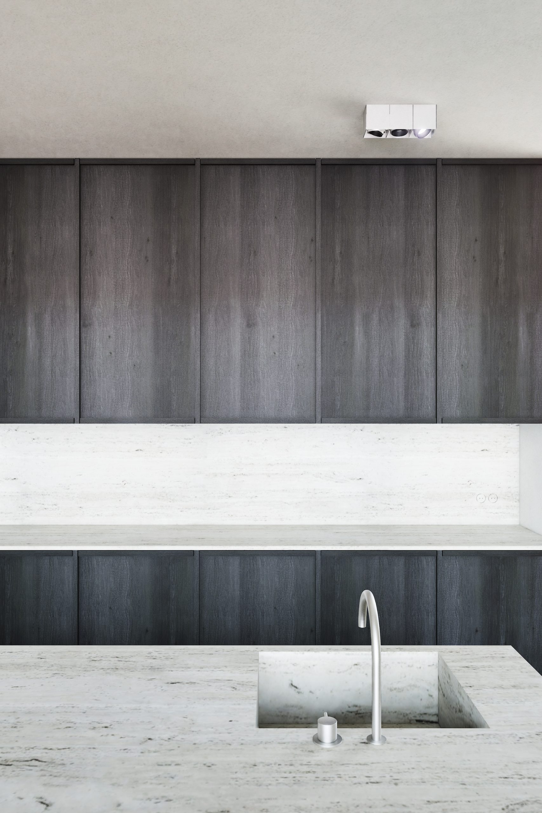

“I don’t know where to start”: the guide to your renovation
A hundred saved pins, three tabs full of kitchens and still no idea where to start. That feeling is completely normal. A renovation does not begin with a sofa or a paint colour, but with something no photo shows you: the layout of your home.

When people think of a renovation, they often think first of what is visible: a floor, a kitchen, a lamp. Understandable, because that is what you see on Instagram and Pinterest. But a beautiful kitchen in the wrong place is still the wrong kitchen. And an expensive floor does not solve the fact that you bump into whoever is emptying the dishwasher every morning.
That is why I reverse the order. First the layout and the flow of your home, then the materials, and only then the products. In this article I explain how you can look at your own home the way an interior architect does.
Why inspiration can paralyse you
Inspiration images are made to seduce. They show one corner, at the best moment of the day, without shoes in the hallway or groceries on the worktop. They tell you nothing about the size of the room, the direction of the light or the family that lives there. The more images you collect, the more choices there seem to be, and the harder it becomes to make one.
Those images are valuable, but in another way. They show what appeals to you: an atmosphere, a material, a tone of colour. So keep them, but use them later in the process.
A renovation does not begin with what you want to buy, but with how you want to live.
First, look at how you live
Before you draw or choose anything, it pays to observe an ordinary week in your home. Where do you put your bag when you come home? Where does the family really eat, at the table or at the island? Who cooks, and who is in the way? Where do you like to sit on a Sunday morning, and why exactly there?
Those answers form the basis of every good design. They tell you more about your ideal layout than a hundred photos.
Sightlines: what do you see when you walk in?
A sightline is what you see when you enter a room or sit down somewhere. Do you look from the front door straight into the toilet door, or towards the light at the back of the garden? Do you see the dishes from the sofa, or the landscape? Good sightlines give a home calm and depth. They draw you through the house.
Daylight: which room gets which light?
Light determines how a room feels, and it changes through the day. Morning light comes from the east, evening light from the west. A dining table where you eat together in the evening ideally gets the last daylight. A home office needs even northern light, without glare on the screen. Note for each room when the sun comes in. You will find that some rooms naturally take on a function.
Circulation: how do you move through the house without colliding?
Circulation is the way people move through a house. Where those routes cross, collisions happen. The kitchen is the best example. A few rules of thumb:
- Keep the walking route out of the work zone. Whoever walks from the garden to the hallway should not have to pass between hob and sink.
- Allow enough space around an island. Count on roughly 100 to 120 centimetres between island and cabinets, so two people can pass and a dishwasher can open.
- Think in a logical sequence. Fridge, sink, worktop and hob work best in the order in which you cook: you take something from the fridge, wash it, chop it and cook it. Allow enough work surface between sink and hob.
- Give daily habits their own place. A breakfast or coffee corner at the edge of the kitchen keeps everyone out of the work zone in the morning.

A simple plan to set your priorities
With these six steps, you can bring structure to your ideas in a few evenings, before you contact anyone.
- Write down what bothers you. Not what you want, but what does not work today. Too little storage, a dark hallway, a kitchen cut off from the rest.
- Describe an ordinary day. From getting up to going to bed, with every member of the household. Where is it busy, where is it quiet? And what will that day look like in ten years, when the children are older or you work from home more?
- Note what you want to keep. Old floors, a staircase, a fireplace, the light from a certain window. What is valuable sometimes disappears unnoticed in the first week of works. Name it beforehand, so the design can take it into account.
- Make three lists. What is essential, what would be nice, and what can wait. Be strict: the first list is short.
- Choose three inspiration images. Not thirty, but three. Look for what they have in common. That is your atmosphere.
- Set a budget range. A rough bracket is enough. It helps you make choices in the right order. Also keep a margin for what you only discover once the finishes come off, especially in older homes.
Where it often goes wrong
The most expensive mistakes are rarely a wrong colour. They are decisions made ad hoc: ordering a kitchen before the layout is fixed, keeping a wall because it is already there, placing sockets before the furniture is chosen. Each choice seems logical on its own, but together they do not form a whole. Fixing things afterwards costs more than thinking carefully beforehand.
Allow enough time
Design, quotations, any permit and the works themselves take time. A realistic schedule often starts months before the first day on site. The earlier you begin, the calmer each step goes, and the fewer decisions you have to make under time pressure.
From a tangle of ideas to one logical floor plan
This is where an interior architect comes in. I bring calm to the chaos by bringing all your ideas, wishes and constraints together in one concrete floor plan. That plan becomes the guide for every next decision: which wall can go, where the kitchen goes, how the light comes in, and only then which materials and furniture belong with it.
Still not sure where to start? A free spatial consultation is a good first step. I visit, look at your home and give advice on the layout on site, without obligation.